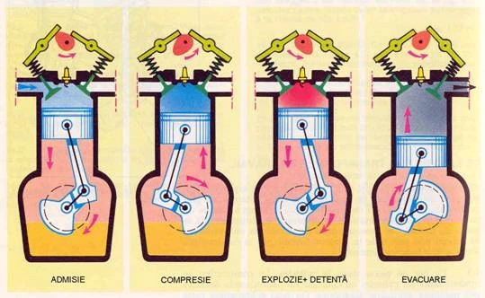
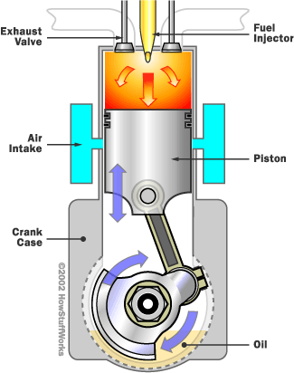
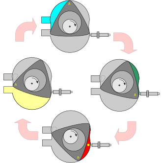
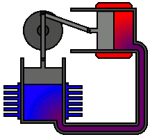
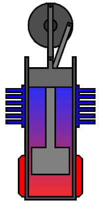
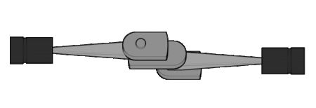
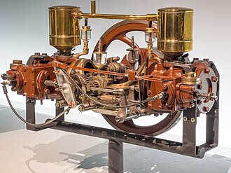

Motorul Otto
Motorul obisnuit Otto este în patru timpi; aceasta înseamna ca la un ciclu
complet, pistoanele lui executa patru miscari, doua înspre chiuloasa motorului si doua în sens opus acesteia.
Pe durata primului timp (prima miscare a pistonului), pistonul se departeaza de chiuloasa, în acelasi timp deschizându-se
si supapa de admisie. Miscarea pistonului absoarbe în cilindru o anumita cantitate de amestec combustibil; în cel de-al doilea
timp, pistonul se deplaseaza înspre partea de sus a cilindrului, comprimând astfel amestecul în camera de ardere. În momentul când pistonul
ajunge în punctul superior al miscarii sale si volumul camerei de ardere este astfel minim, amestecul combustibil este aprins de catre bujii
si prin ardere îsi mareste volumul, dilatându-se, si exercitând astfel o presiune considerabila asupra pistonului care este impins înspre partea de jos a cilindrului, în cadrul celui de-a treilea timp.

În cel de-al patrulea timp, supapa de evacuare este deschisa si pistonul se misca înspre partea de sus a cilindrului, împingând afara gazele arse si pregatind cilindrul pentru repetarea ciclului.
Randamentul unui motor Otto modern este limitat de o serie de factori, dintre care cei mai importanti sunt pierderile prin racirea motorului
si pierderile prin frecari. În general, randamentul unui astfel de motor este dat de catre raportul de compresie (raportul dintre volumul maxim si volumul minim al camerei de ardere).
Acest raport este în mod normal la motoarele moderne de 8:1 sau 10:1. Rapoarte de compresie mai ridicate, ajungând pâna la 15:1 (ceea ce duce la cresterea randamentului), sunt posibile prin utilizarea unor combustibili cu cifra octanica superioara.
Randamentul unui motor Otto modern este de 20-25 %, cu alte cuvinte doar acest procent din energia calorica a combustibilului fiind transformat în energie mecanica utila.
Motorul Diesel
Motorul Diesel este un motor cu ardere internă în care combustibilul se aprinde datorită temperaturii ridicate create de comprimarea aerului necesar arderii, şi nu prin utilizarea unui dispozitiv auxiliar, aşa cum ar fi bujia în cazul motorului cu aprindere prin scânteie.
Comprimarea unui gaz conduce la creşterea temperaturii sale, aceasta fiind metoda prin care se aprinde combustibilul în motoarele diesel. Aerul este
aspirat în cilindri şi este comprimat de către piston până la un raport de 25:1, mai ridicat decât cel al motoarelor cu aprindere prin scânteie. Spre sfârşitul cursei de comprimare motorina (combustibilul) este pulverizată în camera de ardere cu ajutorul unui injector. Motorina se
aprinde la contactul cu aerul deja încălzit prin comprimare până la o temperatura de circa 700-900 grade Celsius. Arderea combustibilului duce la creşterea temperaturii şi presiunii, care acţionează
pistonul. În continuare, ca la motoarele obişnuite, biela transmite forţa pistonului către arborele cotit, transformând mişcarea liniară
în mişcare de rotaţie. Aspirarea aerului în cilindri se face prin intermediul supapelor, dispuse la capul cilindrilor. Pentru mărirea puterii, majoritatea motoarelor diesel moderne sunt supraalimentate cu scopul de a mări cantitatea de aer introdusă
în cilindri. Folosirea unui răcitor intermediar pentru aerul introdus în cilindri creşte densitatea aerului şi conduce la un randament mai bun.

Motorul Wankle
Motorul Wankel este un tip de motor cu ardere internă inventat de inginerul german Felix Wankel, la care mișcarea de rotație se obține nu printr-un mecanism bielă-manivelă, ci cu ajutorul unui piston rotativ de formă triunghiulară.
În comparație cu motorul cu ardere internă cu piston, avantajele motorului Wankel sunt compactitatea și vibrațiile mai reduse. Dezavantajele acestui motor sunt randamentul mai mic[necesită citare],
ceea ce duce la un consum de combustibil mai mare pentru aceeași putere furnizată, emisia sporită de poluați, ceea ce duce la necesitatea instalațiilor de denoxare mai complexe și uzinarea și întreținerea pretențioase, deci mai scumpe.

La motorul Wankel ciclul de patru timpi se desfășoară în spațiul dintre interiorul unui cilindru de formă aproximativ ovală și un rotor similar ca formă triunghiului Reuleaux, cu deosebirea că laturile sunt mai aplatizate.
Forma rotorului este rezultatul unei minimizări în volum a camerei de ardere și a maximizării raportului de compresie. Curba simetrică ce conectează două vârfuri ale rotorului e maximizată spre exterior, cu condiția că nu poate să atingă cilindrul la orice unghi de rotație.
Arborele cardanic central, numit și „Arbore de tip E” trece prin centrul rotorului și este susținut de rulmenți fixați. La vârfuri, rotorul este izolat, astfel încât se formează trei camere de ardere mobile. Rotorul se rotește în sensul acelor de ceasornic pe propria sa axă și e controlat
de o pereche de trepte de sincronizare. O treaptă fixată la una din laturile rotorului este atașată la un mecanism circular care păstrează raportul de o rotație a rotorului la 3 rotații ale arborelui cardanic. Forța presiunii gazului pe rotor trece direct la arbore.

Motorul Stirling
Motorul Stirling este o mașină termică cu aer cald cu ciclu închis regenerativ, cu toate că incorect, termenul deseori este utilizat pentru a se face referire la o gamă mai largă de mașini. În acest context,
"ciclu închis" înseamnă că fluidul de lucru este într-un spațiu închis numit sistem termodinamic, pe când la mașinile cu "ciclu deschis" cum este motorul cu ardere internă și anumite motoare cu abur, se produce un permanent
schimb de fluid de lucru cu sistemul termodinamic înconjurător ca parte a ciclului termodinamic; "regenerativ" se referă la utilizarea unui schimbător de căldură intern care mărește semnificativ randamentul potențial al motorului Stirling. Există mai multe variante constructive ale motorului
Stirling din care majoritatea aparțin categoriei mașinilor cu piston alternativ. În mod obișnuit, motorul Stirling este încadrat în categoria motoarelor cu ardere externă cu toate că sursa de energie termică poate fi nu numai arderea unui combustibil
ci și energia solară sau energia nucleară. Un motor Stirling funcționează prin utilizarea unei surse de căldură externe și a unui radiator de căldură, fiecare din acestea fiind menținut în limite de temperatură prestabilite și o diferență de temperatură suficient de mare între ele.
În procesul de transformare a energiei termice în lucru mecanic, dintre mașinile termice cunoscute, motorul Stirling poate atinge cel mai mare randament, teoretic până la randamentul maxim al ciclului Carnot, cu toate că în
practică acesta este redus de proprietățile gazului de lucru și a materialelor utilizate cum ar fi coeficientul de frecare, conductivitatea termică, punctul de topire, rezistența la rupere, deformarea plastică, etc. Acest tip de motor poate funcționa pe baza unei
surse de căldură indiferent de calitatea acesteia, fie ea energie solară, chimică sau nucleară.

Spre deosebire de motoarele cu ardere internă, motoarele Stirling pot fi mai economice, mai silențioase, mai sigure în funcționare și cu cerințe de întreținere mai scăzute. Ele sunt preferate în aplicații specifice unde se valorifică aceste avantaje, în special
în cazul în care obiectivul principal nu este minimizarea cheltuielilor de investiții pe unitate de putere ($/kW) ci a celor raportate la unitatea de energie ($/kWh). În comparație cu motoarele cu ardere internă de o putere dată, motoarele Stirling necesită cheltuieli de capital mai mari,
sunt de dimensiuni mai mari și mai grele, din care motiv, privită din acest punct de vedere această tehnologie este necompetitivă. Pentru unele aplicații însă, o analiză temeinică a raportului cheltuieli-câștiguri poate avantaja motoarele Stirling față de cele cu ardere internă.

Motorul Plat
Un motor plat este un motor cu pistoane în care cilindrii sunt amplasați de fiecare parte a unui arbore cotit central. Motoarele plate sunt cunoscute și sub denumirea de motoare opuse orizontal, însă acest lucru este distinct față de designul mai puțin comun al motorului opus cu pistoane, în care fiecare cilindru are două pistoane care împart o cameră de combustie centrală.
Configurația cea mai comună a motoarelor plate este configurația de motor boxer, în care pistoanele fiecărui cuplu opus de cilindri se mișcă spre interior și exterior în același timp. Cealaltă configurație
este efectiv un motor în V cu un unghi de 180 de grade între băncile de
cilindri; în această configurație, fiecare pereche de cilindri împarte un singur bolt de arbore cotit, astfel încât, pe măsură ce un piston se deplasează spre interior, celălalt se deplasează spre exterior.

Primul motor plat (Benz Contramotor) a fost construit în 1897 de Karl Benz. Motoarele plate au fost folosite în aplicații aviatice, motociclete și automobile. Acum sunt mai puțin obișnuite în mașini decât
motoarele drepte (pentru motoarele cu mai puțin de șase cilindri) și motoarele în V (pentru motoarele cu șase sau mai mulți cilindri). Motoarele plate sunt mai comune în aviație, unde motoarele drepte sunt
raritate și motoarele în V au dispărut aproape complet cu excepția aeronavelor istorice. Ele au înlocuit chiar și motoarele radiale în multe instalații mai mici.
